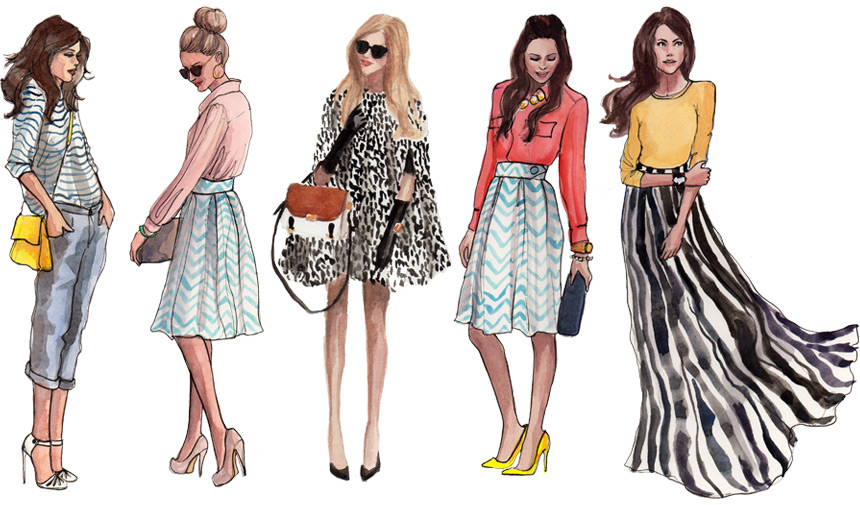

Moda Nedir?: Bir toplumda bir zaman dilimi
içerisinde öne çýkan giyim tarzlarýný ifade etmekle birlikte, sadece giyim deðil genel
davranýþlar, sanat, mimari, edebiyat ve yemek gibi bir çok konuyu da içine alan ve bir süre
etkin olan toplumsal bir beðeniyi de anlatmak için kullanýlmaktadýr. Türk Dil Kurumu
tarafýndan yayýmlanan Türkçe sözlükte ise moda kelimesi birkaç þekilde
tanýmlanmaktadýr. Bu tanýmlar: 'Deðiþiklik gereksinimi veya süslenme özentisiyle toplum
yaþamýna giren geçici yenilik.', 'Belirli bir süre etkin olan toplumsal beðeni, bir þeye karþý
gösterilen aþýrý düþkünlük.' , 'Geçici olarak yeniliðe ve toplumsal beðeniye uygun olan'.
Dünya da moda baþkentleri sayýlan belli kentler vardýr. Bu kentler New York, Milano, Paris
ve Londra' dýr. Modanýn kalbi iþte bu þehirlerde atar. Moda haftalarý, defileler, moda
günleri, fuarlar vs bu þehirlere bambaþka bir hava katar. Bu tür etkinlikler ile adýný
duyuran diðer þehirler ise; öne çýkan diðer þehirler ise; Dubai, Berlin, Tokyo, Roma, Miami,
Hong Kong, São Paulo, Sidney, Barcelona, Madrid, Viyana, Yeni Delhi ve Los Angeles' dir.
Günümüzde moda denildiðinde akla hep kýyafet gelir. Fakat moda sadece giysi deðildir.
Moda; müziktir, sanattýr, edebiyattýr, tiyatrodur, yemektir vs. Peki moda, pahalý olan þeyi
almak demek midir' Kesinlikle hayýr! Bir çok pahalý þey vardýr ki, beþ para etmez aslýnda.
Hatta o þeylere nasýl ve neden para verirler anlamam. Mantýklý bir gerekçesi var mý acaba
derim ama, aklýma tek gelen þey þu: bazý insanlar parayý nereye götüreceklerini
bilmedikleri için, bir noktadan sonra saçmalýyorlar. Hele birde iþe zevksizlikleri de girince,
iþ çýðrýndan çýkýyor haliyle.
Bana göre, þýk giyinmek deðil önemli olan. Akýllýca olan rahat giyinmektir, yoksa diðer
türlü baþkalarý için giyinmiþ olursunuz. Artýk dünya deðiþti. Malýn tek baþýna pahalý olmasý
ya da þýk olmasý yeterli deðil. Esneklik, rahatlýk önemli. Farklý olup ürettiði malýný satmak
adýna didinen korkak modacýlarýn ýþýðý sönüyor. Evet dünya deðiþiyor, moda kavramý deðiþiyor.
|